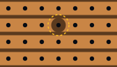
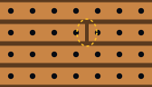
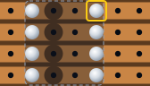
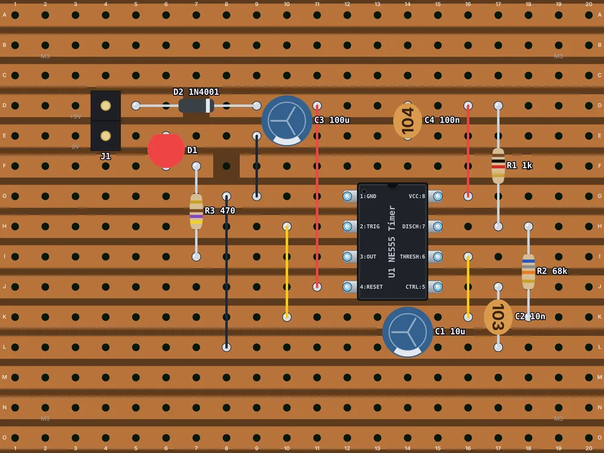
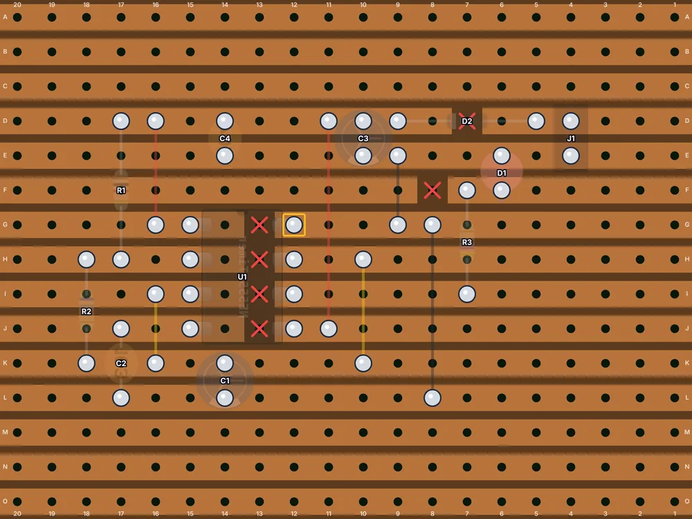

Think in strips
On stripboard, every strip is a connection that already exists: a wire running the length of the board. Building a circuit comes down to three moves:
- Place parts across strips. A resistor with its leads on two different strips joins those two connections, exactly like a line on the schematic.
- Cut strips where a connection has to stop, so one strip can carry two or more different connections along its length.
- Add links: short wires running across the strips, to join strips that aren't next to each other.
So the trick is to give each connection in your schematic its own strip, or its own stretch of strip between cuts. A part never lies along a strip unless the strip is cut between its leads: otherwise both leads land on the same connection, and the part is shorted out.



Chips sit across a cut
A DIP chip goes on with its two rows of pins running across the strips, so each pin gets a strip to itself. That would leave each pin on the same strip as the pin opposite it (pin 1 with pin 8, on an 8-pin chip), so the strips under the chip must be cut between its two rows of pins. Every DIP chip on stripboard needs these cuts, and forgetting them is the most common stripboard mistake.
The bonus is that each pin now has its own half-strip reaching out to the side, where the parts for that pin can plug straight in.
Power rails and links
Pick a strip for each supply: the board's top and bottom strips, or the strips just above and below a chip, are common choices. Leave them uncut. Links then carry power wherever it's needed, running across the strips just as components do: bare tinned wire, or insulated wire where a link might touch something.
Keep links straight and at right angles to the strips, and keep their number down. If you're adding lots of links, a part is probably in the wrong place.
Planning the layout
Stripboard rewards planning more than any other board, because a cut in the wrong place, or a part one hole out, changes the circuit. A method that works:
- Decide the strip direction, and draw the board from the component side with the strips shown faintly, as if you could see through it.
- Place the chip roughly in the middle, mark the cuts under it, and choose the rail strips.
- Work round the chip pin by pin, from pin 1, placing the parts that connect to each pin across its strip.
- Reuse strips: a part that needs ground can land on any strip that's already linked to ground.
- Mark every cut and link, then check every connection against the schematic. Check the ones you don't want too: two parts sharing a strip by accident are connected.
Cutting tracks
There are two kinds of cut:
- At a hole. Twist a spot-face cutter, the purpose-made tool, or a sharp drill bit about 3 to 4 mm across, in the hole by hand until the copper ring around it has gone. You're cutting the copper, not drilling through the board: a few turns is enough. The hole is lost to the circuit.
- Between holes. With a sharp craft knife, make two cuts across the strip about 1 mm apart and lift out the sliver of copper between them. It's fiddlier, but both holes stay usable, so your layout can be tighter.
Some builders cut before soldering, while the board is flat and easy to see. Others cut afterwards, counting from the solder joints. Either works, as long as every cut matches the plan.
Brush the board after cutting (an old toothbrush is ideal). Loose curls of copper can lodge between strips and short them.
Check every cut
A cut that leaves a hair of copper is no cut at all. Check each one:
- Hold the board up to a bright light: a good cut shows a clean gap right across the strip.
- Look with a magnifier, or your phone's camera zoomed in, for thin copper whiskers bridging the gap.
- Put a meter's probes either side of the cut, in continuity mode: it should stay silent.
Soldering on stripboard
The gap between strips is narrow, so solder bridges between neighboring strips are the classic stripboard fault. Use a little less solder than feels natural and keep each joint on its own strip. Afterwards, run a sharp blade along the gaps beside your joints to clear any hairline bridge you can't see, then check the gaps against a light again.
Reading stripboard layouts
Stripboard layouts in books, magazines and websites are usually drawn from the component side, with the strips shown faintly as if you could see through the board and the cuts marked with an ✕. Some are drawn from the copper side instead, which is a mirror image. Before you cut anything, work out which you have: on a component-side drawing, the parts' labels read normally.
When you turn the board over to cut, the cuts flip left to right: the same mirror-image trap as on perfboard. Count from a marked corner, and cut from a copper-side copy of the plan if you can.
Worked example: the 555 blinker on stripboard


The same LED flasher as in the perfboard example, on a stripboard 20 holes by 15 with horizontal strips. +9 V and ground run side by side along the top, so the supply capacitors C3 and C4 sit straight across them, and a second ground strip runs along the bottom for the timing parts. The diode D2 lies along the +9 V strip across a cut, so the battery only reaches the circuit through it. The chip straddles four cuts, giving each of its eight pins a half-strip of its own: red links take pins 8 and 4 to +9 V, black links take pin 1 to both ground strips, and yellow links join pins 2 and 6 on the timing strip. One more cut keeps the LED's strip short. The battery comes in on J1, a 2-pin header rather than the perfboard's screw terminal, since its pins sit on neighboring strips. Eleven parts, six links, six cuts.
The circuit itself, with its schematic and parts list, is explained in the 555 LED blinker project.
Classic gotchas
- No cuts under a chip: facing pins shorted together. Check every DIP chip.
- Cuts in mirror image: cut from the copper side, using a copper-side plan.
- A part along a strip instead of across it, shorting itself out.
- Hairline bridges between strips, from solder or copper curls.
- Long unused strip ends. Neighboring strips have a little capacitance between them, and long spare ends act like small antennas. That's harmless in most hobby circuits, but in high-frequency or very sensitive ones, cut spare strips short or trim the board.
Switch the board to Stripboard, choose the strip direction, and cut with the Cut tool. The Nets panel follows every strip and cut, so a missing cut shows up as two connections merged into one, and the solder side view marks every cut to make with a red ✕, mirrored the way you'll see it. Its cuts are at a hole, the way a spot-face cutter makes them: it can't show a cut between two holes.
Frequently asked questions
What drill bit size do I use to cut stripboard tracks?
A sharp bit about 3 to 4 mm across, turned by hand in the hole, or a purpose-made spot-face cutter. It only has to cut through the copper ring around the hole, not through the board.
Should I cut stripboard tracks before or after soldering?
Either works. Cutting first is easier on a flat, clean board; cutting afterwards lets you count from the solder joints. Whichever you choose, check every cut against a light and with a meter.
Can I cut a stripboard track between holes?
Yes: make two knife cuts about 1 mm apart across the strip and lift out the copper between them. Both holes stay usable, which allows tighter layouts.
Further reading
The sources behind this guide, and good places to go deeper:
- Stripboard (Electronics Club)
- Stripboard (Wikipedia)
- Practical circuit construction with strip board (Instructables)
- Best stripboard trace cutting tool? (EEVblog forum)
Plan your next board in Perfboard Designer
Free, in your browser, no sign-up: lay out perfboard or stripboard, check every connection, flip to the solder side and print it at true size.